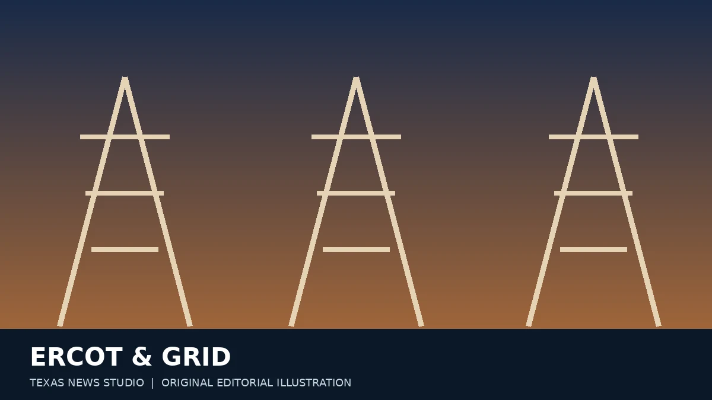
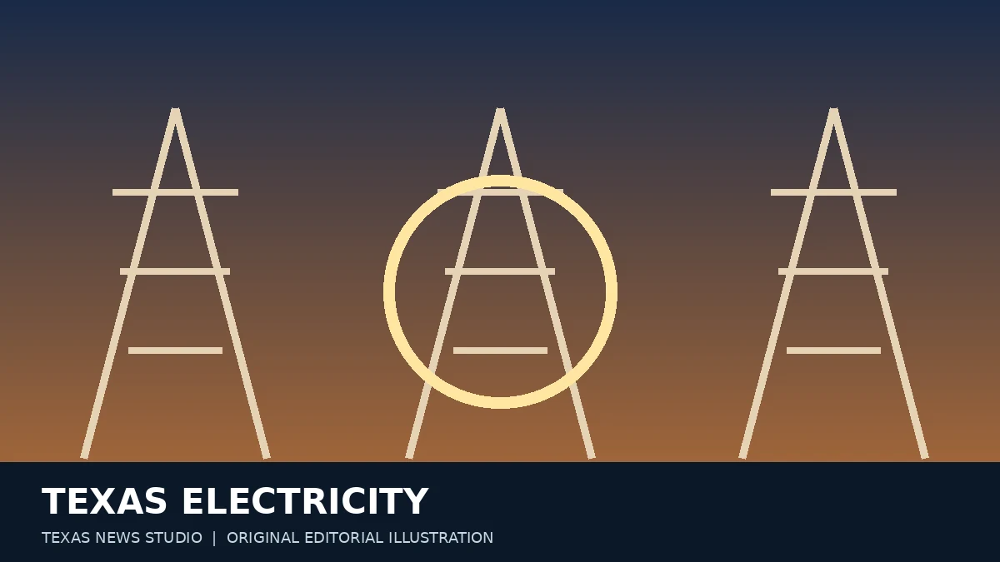

TEXAS ENERGY & POWER
ERCOT and Large Electric Loads: What Texans Should Watch
Data centers and industrial projects are making grid planning a major Texas news topic.
READ ARTICLE →Original Texas News Studio reporting guides and explainers. New verified developments will be added as they emerge.

Data centers and industrial projects are making grid planning a major Texas news topic.
READ ARTICLE →
Why energy prices, delivery charges and household usage can move differently.
READ ARTICLE →